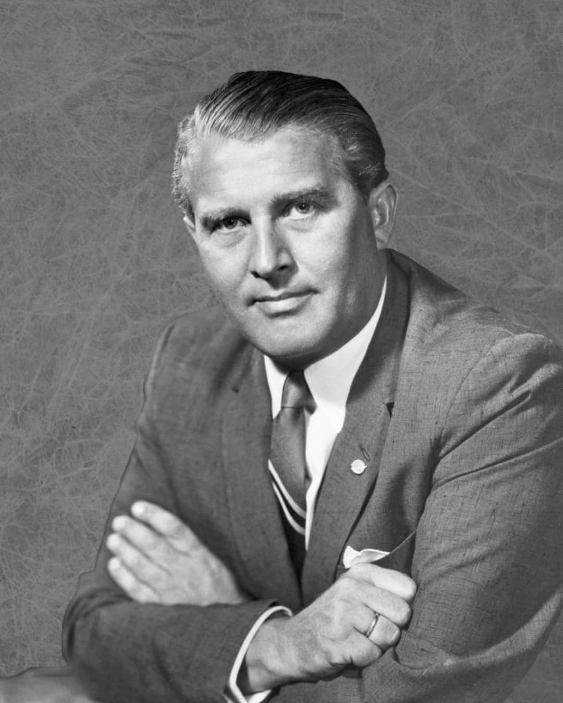
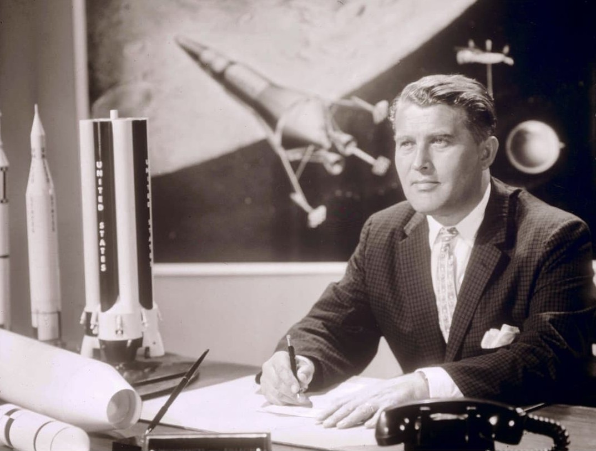

Wernher von Braun (1912–1977) est l’une des figures les plus controversées du XXe siècle. Ingénieur allemand, membre du parti nazi et officier SS, il dirige le développement de la fusée V2, arme de terreur utilisée contre les populations civiles en Europe. Après la guerre, il est récupéré par les États-Unis et devient l’un des architectes majeurs du programme spatial américain, notamment des fusées Saturn et des missions Apollo.


Dans les années 1930, von Braun travaille sur les fusées au sein de l’armée allemande. Sous le régime nazi, il devient le directeur technique du centre de recherche de Peenemünde, où est développée la fusée A4, plus connue sous le nom de V2. Cette arme balistique, lancée depuis des bases comme Éperlecques ou La Coupole, est utilisée à partir de 1944 contre Londres, Anvers et d’autres villes, visant principalement les populations civiles.
La production des V2 se fait dans des conditions atroces, notamment dans le camp-usine de Dora-Mittelbau, où des milliers de déportés travaillent sous terre, dans la faim, la violence et la terreur. Von Braun, membre du parti nazi et officier SS, est directement lié à ce programme militaire qui combine innovation technologique et exploitation humaine.
À la fin de la guerre, von Braun et une partie de son équipe se rendent aux forces américaines. Dans le cadre de l’opération Paperclip, les États-Unis récupèrent des scientifiques allemands pour les intégrer à leurs programmes militaires et technologiques. Von Braun est transféré aux États-Unis, où il commence à travailler pour l’armée américaine sur les fusées balistiques.
Son passé nazi et son rôle dans le programme V2 sont connus, mais largement mis de côté dans le contexte de la guerre froide, où la priorité est de rattraper et dépasser l’Union soviétique dans le domaine des fusées et de l’espace.
À partir de la fin des années 1950, Wernher von Braun devient une figure centrale du programme spatial américain. Il participe au développement des fusées Redstone et Jupiter, puis surtout des fusées Saturn, conçues pour envoyer des capsules habitées au-delà de l’orbite terrestre.
Von Braun est l’un des principaux architectes de la fusée Saturn V, utilisée pour les missions Apollo. C’est cette fusée qui permet aux astronautes américains de se poser sur la Lune en 1969. L’ingénieur qui avait conçu une arme de terreur pour le régime nazi devient ainsi l’un des symboles de la conquête spatiale américaine.
La figure de Wernher von Braun interroge la responsabilité des scientifiques dans les régimes totalitaires. Son génie technique est indéniable, mais il a servi d’abord une dictature criminelle, puis une puissance engagée dans la guerre froide. Les victimes du programme V2, notamment les déportés de Dora-Mittelbau, restent au cœur de la mémoire de cette histoire.
Aujourd’hui, les musées et lieux de mémoire, comme La Coupole ou le Blockhaus d’Éperlecques, rappellent que derrière les fusées et les exploits technologiques se trouvent des vies brisées, des civils bombardés et des déportés exploités. La trajectoire de von Braun est ainsi un exemple de la complexité morale de la Seconde Guerre mondiale et de l’après-guerre.
⬅ Retour aux visages